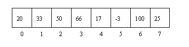

Arrays and Hashes
The basiscs you need to know about these two awesome objects!
May 11,2015
Topics:
- Learn what is an Array
- Learn what is a Hash
- Compare Arrays and Hashes
What is an Array?
For starters, an array is an object in OOP (Object Oriented Programming). To be more specific an array is an ordered arrangement where we are able to store objects in an ordered way so we can manipulate them anytime we want. Just think of it like a set of ordered lockers starting from the number zero(0). This structures are able to grow as much as you like so there could be infinite number of lockers if you have infinite number of objects you want to store. Let's say you want to store three objects (3) in an array. So the first object is your backpack that is stored in locker number zero (0). Then the next object would be your laptop stored in locker number one (1). The last object would be your instrument (lets pretend for a second you are a musician, and if you are than cool!) that will be stored in locker two (2). Respectively |backpack(0)|laptop(1)|instrument(2)|. There are many things you cand do with arrays but for now lets just sink in the basics.
array = [ "backpack", "laptop", "instrument"]
#This code creates the array and stores the objects right in! That easy!
Here is a graphic example but this time it is storing random numbers.

What are Hashes?
Now that we know what are arrays hashes are going to be very quick! So hashes are objects to in OOP and they are a structure very similar to arrays but the difference is the ordering and naming convention. So hashes work with keys and values. In our example with the lockers lets say each locker corresponded to a person and they key to open the locker is ther name so names: Andres , Rafael and Don. Each of them can store anything they want in their locker and to to be able to access it they just need to say their name. So... |Andre's Stuff|Rafael's Stuff|Don's Stuff| and the keys are their names.
hash = { "Andres"=>Andre's Stuff, "Rafael"=>Rafael's Stuff, "Don" =>Don's Stuff}
#This code creates the hash and stores the objects with their keys to acces them.
So keep in mind that to acces the elements (inside the locker), the keys are needed wich are the names of the respective owners.
So whaat is the difference between them?
-Arrays have a specific order begging from zero (0). -Hashes dont have a specific order. -Hashes use keys (names) and values (whats inside the locker). -Hashes can be viewed as key value pairs and the keys and values can be set by the coder. - Arrays the only thing you can modify is their length and what is inside them.
Keep posted for updates!
@devgmtech